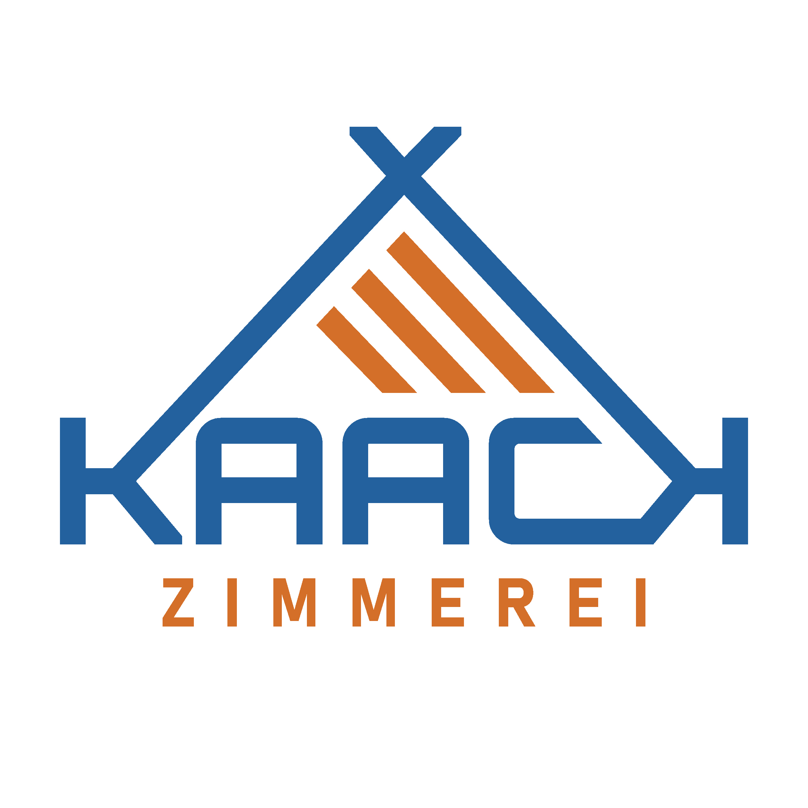

Mediengestaltung · Kiel / digital & print
Marken, die
hängen bleiben.
Ich entwickle klare visuelle Auftritte für Unternehmen, Handwerk und Gastronomie — vom ersten Logo bis zur Website und zum fertigen Druck- oder Textilprodukt.
01 Brand Design
02 Web
03 Editorial
04 Print
Ausgewählte Arbeiten
Gute Gestaltung beginnt mit Zuhören.
Jedes Projekt bekommt seinen eigenen Charakter — und ein System, das auch im Alltag funktioniert.
Was ich mache
Von der Idee bis zur Anwendung.
Kein Baukasten-Look. Ich entwickle Gestaltung, die zu deinem Unternehmen passt und auf Website, Papier und im Raum konsistent bleibt.
- 01
Marke & Identität
Logoentwicklung, Farbwelt, Typografie und visuelle Systeme.
- 02
Web & Digital
Konzeption, responsive Gestaltung, CMS und saubere Umsetzung.
- 03
Editorial & Print
Magazine, Broschüren, Plakate, Karten und druckfertige Daten.
- 04
Textildruck & Werbetechnik
T-Shirts, Hoodies und andere Oberteile sowie Beschriftungen und große Formate.
„Gutes Design sieht nicht nur gut aus. Es macht die richtige Idee verständlich.“
Adrian Richter
Mediengestalter mit Blick fürs Ganze.
Seit meinen ersten Websites begeistern mich die Möglichkeiten, die aus Technik und Gestaltung entstehen. Seit 2015 arbeite ich selbstständig. 2019 habe ich meine Ausbildung zum Mediengestalter Digital & Print mit Schwerpunkt Editorial Design und Corporate Identity abgeschlossen.
Ich höre genau hin, denke lösungsorientiert und begleite Projekte persönlich — von der ersten Skizze bis zum fertigen Ergebnis.
- Basis
- Kiel · Norddeutschland
- Arbeitsweise
- Direkt · flexibel · persönlich
- Fokus
- Design · Digital · Print
Lass uns loslegen